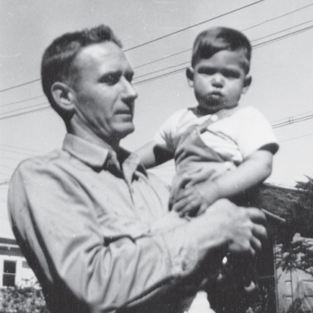
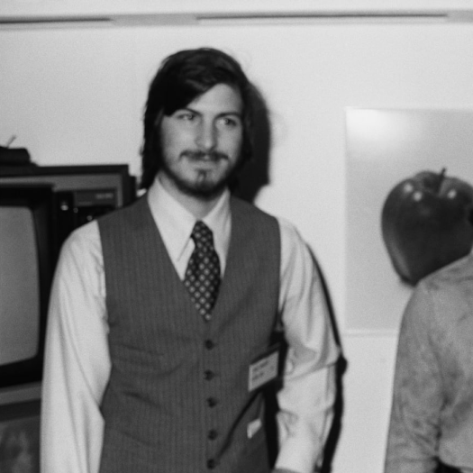
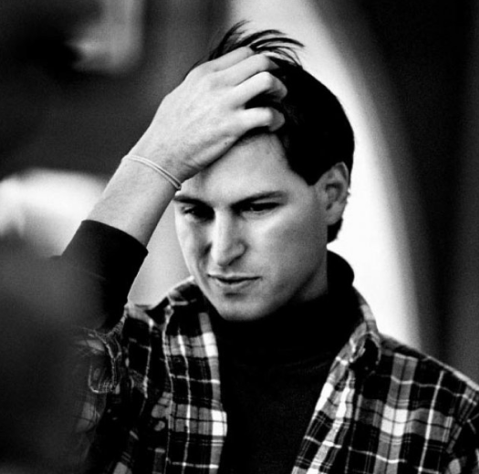
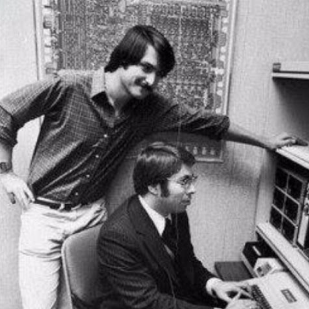

biography
Place of birth and familySteven Paul Jobs was born on February 24, 1955 in San Francisco, California. His unwed biological parents, Joanne Schieble and Abdulfattah Jandali, put him up for adoption. Steve was adopted by Paul and Clara Jobs, a lower-middle-class couple, who moved to the suburban city of Mountain View a couple of years later. |
 |
|  |
At age 13, he met one the most important persons in his lifeThe Santa Clara county, south of the Bay Area, became known as Silicon Valley in the early 1950s after the sprouting of a myriad of semi-conductor companies. As a result, young Steve Jobs grew up in a neighborhood of engineers working on electronics and other gizmos in their garages on weekends. This shaped his interest in the field as he grew up. At age 13, he met one the most important persons in his life: 18-year-old Stephen Wozniak, an electronics wiz kid, and, like Steve, an incorrigible prankster. |
Five years later, when Steve Jobs reached college ageFive years later, when Steve Jobs reached college age, he told his parents he wanted to enroll in Reed College — an expensive liberal arts college up in Oregon. Even though the tuition fees were astronomical for the poor couple, they had promised their son's biological parents he would get a college education, so they relented. Steve spent only one semester at Reed, then dropped out, as he was more interested in eastern philosophy, fruitarian diets, and LSD than in the classes he took. He moved to a hippie commune in Oregon where his main activity was cultivating apples. |
 |
|  |
A few months later, Steve returned to CaliforniaA few months later, Steve returned to California to look for a job. He was hired at the young video game maker Atari, and used his wages to make a trip to India with one of his college friends, in order to 'seek enlightenment'. He came back a little disillusioned and started to take interest in his friend Woz's new activities. |